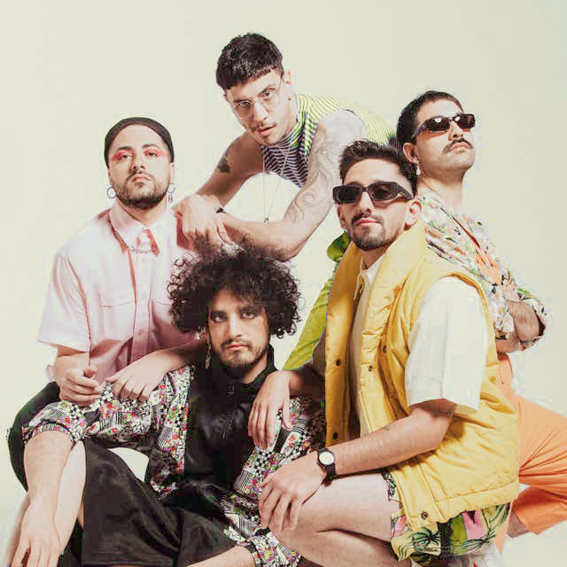

Historia
Todo empezó cuando Alan comenzó a estudiar teatro, pero se dio cuenta de que no le gustaba tanto, entonces empezó a escribir y entró a la facultad de letras, en la carrera tuvo un gran profesor de filosofía, empezó a cuestionarse cosas de su vida y cuál iba a ser el runbo que iba a tomar la misma, entonces con todos sus ahorros se fue de viaje por Latinoamérica. Ya había visitado muchos paises, entonces fue en Bolivia que ya no le quedaba mucho dinero y decidió comprarse una guitarra y con el poco conocimiento que tenia acerca del instrumento empezó a tocar en los los buses, restaurante y muchos lugares. Pasaron algunos años y se dio cuenta de que se unificó lo que escribia con la música, y fue ahí cuando empezó a escribir canciones.
En 2014 sus escritos comenzaron a tomar forma de canciones hasta que en 2017 junto a la idea de Jerónimo Romero crearon la banda "Alan Sutton y las Criaturitas de la Ansiedad", integrada por Jerónimo Romero (guitarra y coros), Juan Ignacio Bennatti (batería), Tomas Caso (bajo), Lautaro RA (teclados y coro), Agustín Ruiz Panelo (percusión). El año 2018 la banda grabó en los estudios Del Torito Records y publicó su primer disco con el mismo nombre de la banda.

En el año 2020 lanzarón un formato algo diferente sobre su siguiente disco, este fue dividido en tres partes y fueron: "Hombrecito"; que fue publicado en abril el 2020, "Con los Pies"; publicado en junio, "En la Tierra"; publicado en septiembre del 2020. Cada uno contenía 4 canciones, el 4 de septiembre se publicó el disco completo titulado "Hombrecito Con los Pies en la Tierra" que contenía 12 canciones.
El año 2021 la banda publicó un total del tres sencillos y estos fueron: "Fin del Mundo"; publicado en marzo, "Más sencillo"; publicado en agosto y "No Tengo hambre, Tengo Ansiedad"; publicado en octubre. Pero antes de finalizar el año, la banda publico un disco algo peculiár que se llama "Tomate 5", un disco con un total de 5 canciones y de la duración de un minuto cada una, Alan Sutton les llama "microcanciones".
Este 2022 el artista y su banda prometen muchas sorpresas como algunos sencillos y un posible disco a fines de año, además la banda ya está haciendo algunos conciertos en algunas ciudades de Argentina.
Sin duda esta es una banda única que cualquiera debería escuchar, si lo que le gusta es la música fuera de lo convencional con un toque de locura, esta es tu banda.